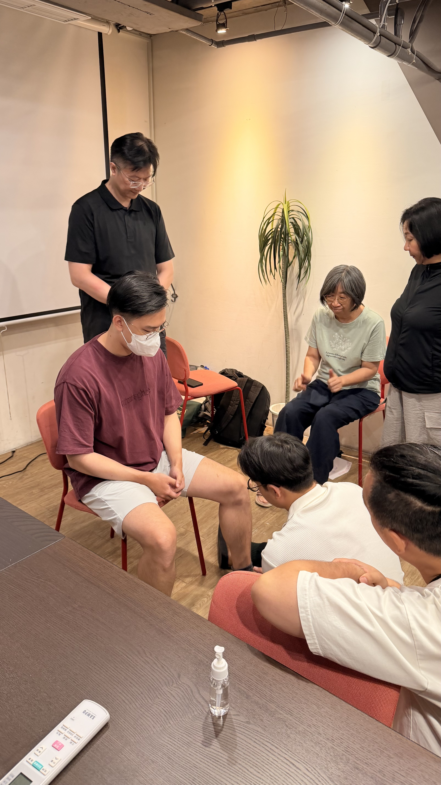
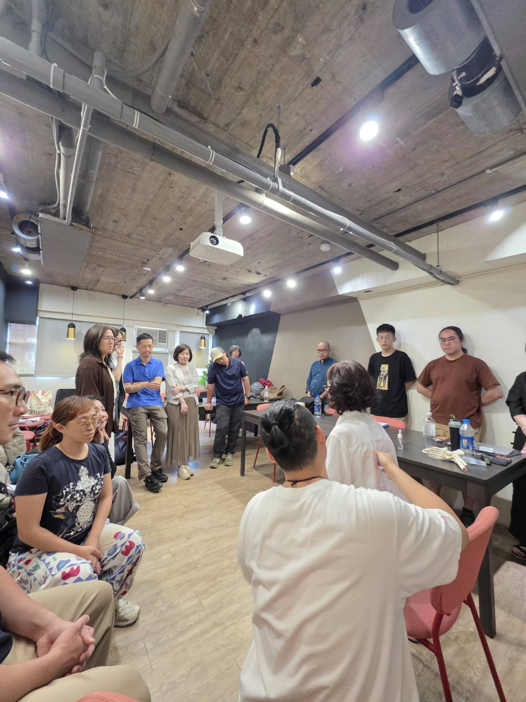
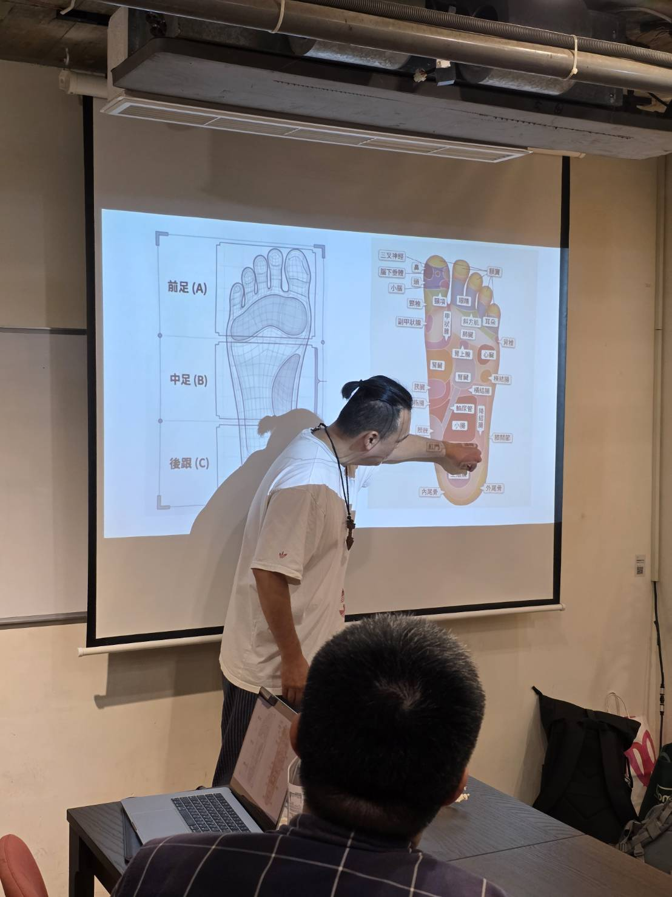
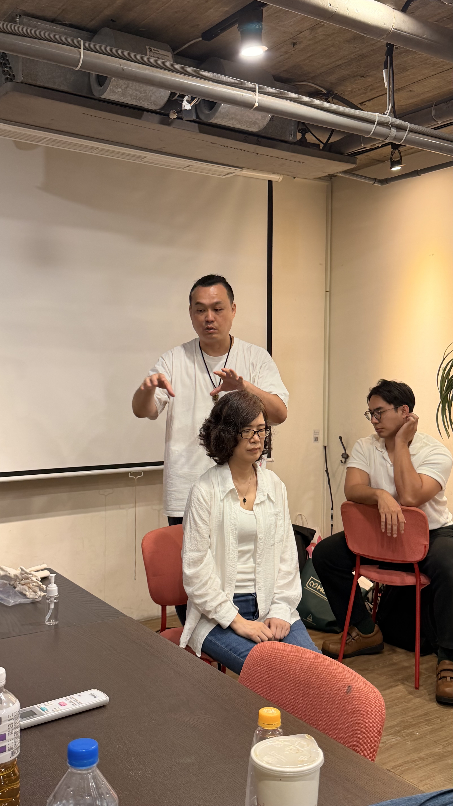

所有場次都完全免費，不需要先會什麼，帶著身體來體驗就好。實際場次與時間，第一手都在官方 LINE 公布。
現場免費提供足部檢測與結構平衡調理體驗，不收費、不推銷，帶您常穿的鞋子來體驗最有感。
接下來我們也會走進更多社區、運動現場與公益團體，提供免費的身體結構平衡體驗。實際場次與時間，第一手都在官方 LINE 公布。
我們受邀在董氏第四代的聚會中，分享身體結構平衡的觀念，並現場提供徒手調理體驗。




加入官方 LINE，第一手掌握最新的義整活動地點與時間，直接在 LINE 上完成報名。